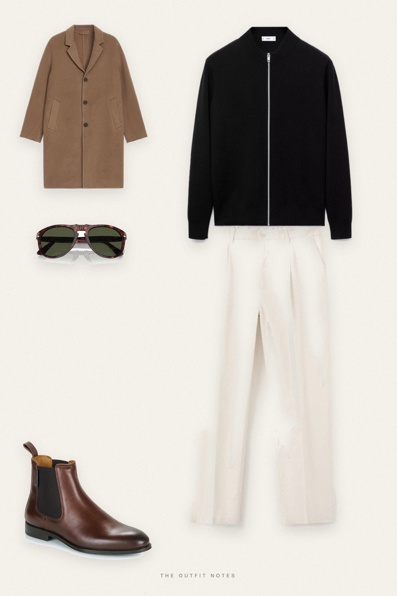

Milan Camel
black knit under camel wool

Winter outfit men with real contrast: a camel wool topcoat over a black ribbed zip knit, light cream pleated trousers that fall to a slight break and chestnut chelsea boots. ARKET Relaxed Wool Topcoat, Mango zip cardigan, Mango fluid trousers, Pellet Alfonse, Persol 649. Old money winter outfit, easy to copy.
The pieces
This page contains affiliate links: if you buy through them, we may earn a commission at no extra cost to you. Disclosure.
 ARKET
ARKET
Camel wool topcoat
Shop Mango
Mango
Black zip-up knit cardigan
Shop Mango
Mango
Cream pleated fluid trousers
Shop Pellet
Pellet
Chestnut chelsea boots
Shop Persol
Persol
Havana 649 sunglasses
Shop
Prices are indicative, taken when the look was published, and may have changed. Pictures of the outfit are AI-generated illustrations of real products; the product photos are the retailers' own.
Published 1 October 2026.